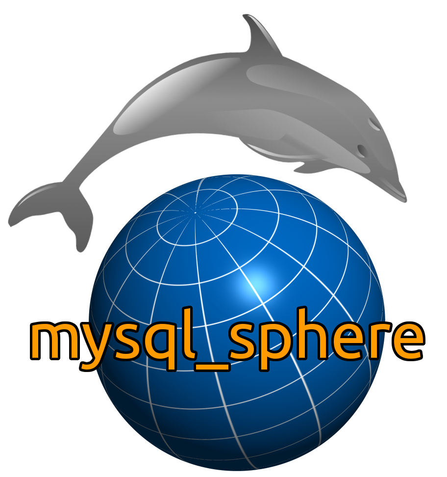

Now available for dolphins!
mysql_sphere provides spherical data types, functions, and operators for MySQL and MariaDB. It is based on pgSphere 1.1.1 pre2 (see http://pgsphere.projects.pgfoundry.org/) and constitutes a port of pgSphere from PostgreSQL to MySQL/MariaDB. Indexing is not yet supported, due to the unextensibility of indexing in MySQL.
The project is hosted at github.com.
This document describes installation and usage of this module.
| Next | ||
| What is mysql_sphere? |